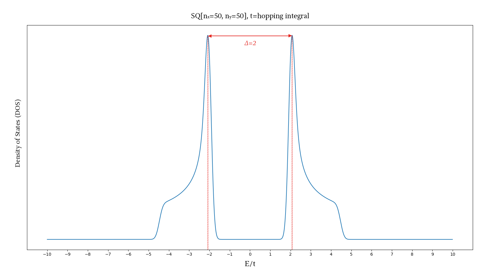

ー (2022/09) Application of the "BdG equation" to an s-wave, homogenous, square lattice superconductor
Description: BdG(Bogoliubov-de Gennes) equation is a solution to the Bogoliubov-transformed BCS(Bardeen-Cooper-Schrieffer) wavefunction. It is a based on a self-consistent field approach.
First, Let's calculate the density of states using a tight-binding Hamiltonian without the BdG term:
")
The plot looks correct!
Now, let's try and add the BdG(Cooper pairing) term into the Hamiltonian:

Whoa, the center split open! This splitting is a characteristic of superconductors
Now, let's graph the relation between Cooper pairing(Δ) and temperature:
")
Interesting, because this is a general 2nd-order phase transition curve
In case you're interested to learn more, please refer to the following presentationlink
Description: Using the software LAMMPS, various simulation parameters were varied and observations were collected
In case you're interested to learn more, please refer to the following presentationlink